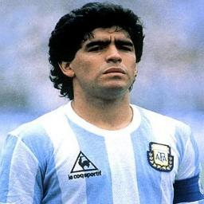

|  | Diego Maradona |
Diego Armando Maradona was born on 30 October 1960 is an Argentine retired professional footballer and current manager of Mexican second division club Dorados. Many in the sport, including football writers, players, and fans, regard him as one of the greatest football players of all time.
He was joint FIFA Player of the 20th Century with Pelé. Maradona's vision, passing, ball control and dribbling skills was combined with his small stature (1.65 m or 5 ft 5 in), giving him a low center of gravity which allowed him to maneuver better than most other football players, he would often dribble past multiple opposing players on a run. His presence and leadership on the field had a great effect on his team's general performance, while he would often be singled out by the opposition.